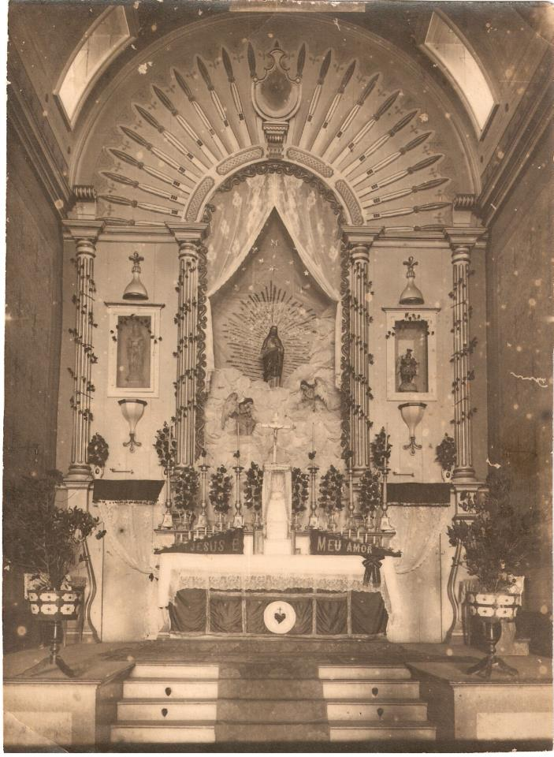
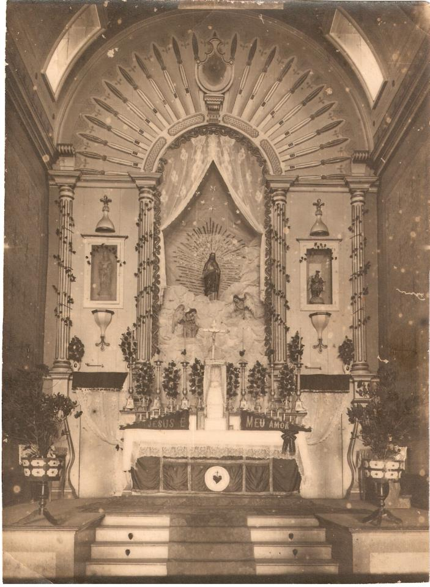
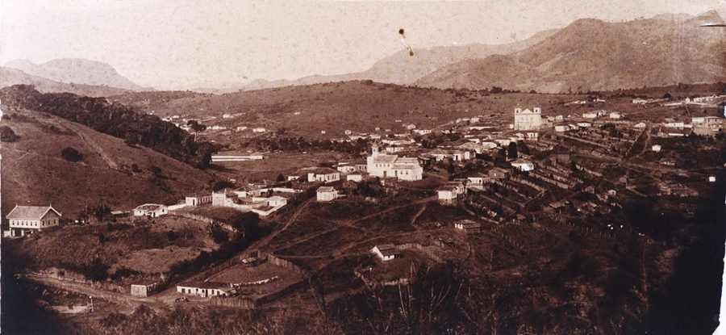
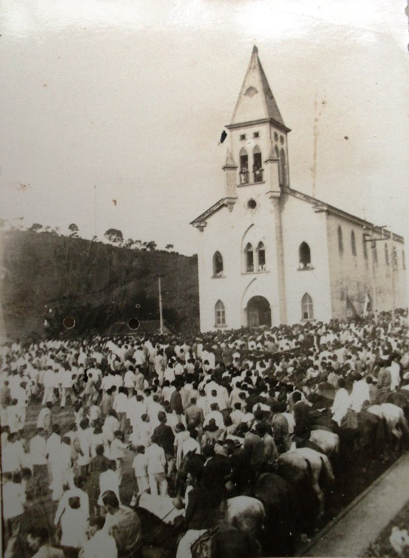
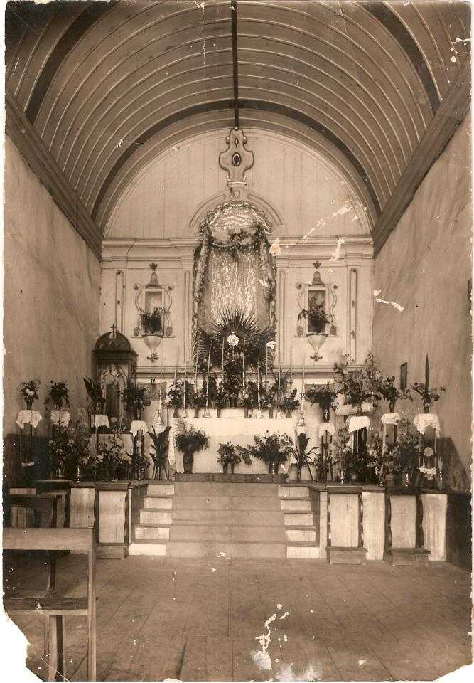

Não há dados sobre a data certa em que se fundou o povoado. Diz a tradição que o patrimônio de 30 alqueires foi doado por D. Anna Chaves, filha de Francisco Dias Chaves. Considerada benfeitora do lugar, com os cidadãos Tenente-Coronel Caetano Ferreira da Costa e Silva, João Gonçalves de Moraes, Alferes Antônio Dias Pereira , José Pereira da Rosa, Antônio Gonçalves da Silva Torres, Capitão Manoel José Pereira Gomes e Tenente Francisco José Dias Pereira.
É as estes espíritos generosos que se deve a edificação da igreja Matriz, erguida sob o patrocínio de São Caetano, e também das capelas de Nossa Senhora do Rosário e de Nossa Senhora da Conceição Aparecida. Além destas igrejas existem outra capela no cemitério, sob a invocação de São Miguel.

Em 5 de maio de 1878 faleceu o Reverendíssimo vigário padre Feliciano José Teixeira. Exercia esse cargo havia 18 anos, e 2 dias antes de morrer havia erguido um novo Cruzeiro no largo principal da povoação, tendo previamente convidado suas ovelhas para no dia 5 assistirem à transladação da imagem de Nossa Senhora das Dores para seu altar, construído na matriz. O povo afluiu com entusiasmo, reinava geral alegria , mas, dolorosa surpresa! quando se tratava de realizar a transladação, inesperadamente morria o estimado sacerdote, verdadeiro promotor de toda a festa!
 

Trecho da ata da visita pastoral do Sr. Bispo Diocesano Dom Lino Deodato Rodrigues de Carvalho à Paróquia de São Caetano da Vargem Grande em 2 de julho de 1889, extraído do Livro do Tombo nº 1 da Paróquia de Brazópolis.
Quanto à fundação e começo deste povoado, podemos obter alguns esclarecimentos vagos e sem informações claras e precisas, apesar dos poucos anos decorridos de então até hoje.
De uma ata lançada no livro que trata das obras da Matriz consta que o 1º vigário, Reverendíssimo Athanasio José Rodrigues convocara em 20 de junho de 1847 uma reunião e nomeara uma comissão para dar começo às referidas obras.
Consta igualmente de uma informação de pessoa antiga do lugar que um pouco acima do local da atual matriz existia apenas uma insignificante capela e bem assim um pequeno cemitério no mesmo lugar do atual, administrando então os sacramentos o Reverendíssimo João Baptista de Alvarenga, 1º Capelão-Cura, dependente do Vigário da Paróquia de São José do Paraíso, a quem remetia os assentos para o registro paroquial.
 De acordo com os relatos existentes no Livro do Tombo e nos diversos exemplares do Jornal "Villa Braz" sobre a história da Igreja da Aparecida, anteriormente chamada Capela da Aparecida, baseada na tradição oral, verificou-se que a devoção a Nossa Senhora Aparecida em brazópolis tem início desde antes de 1862, pois esta é a data da construção da primeira capela. A inauguração da última construção se deu em abril de 1918.
Os relatos informam que a imagem de Nossa Senhora Aparecida foi achada, em Brazópolis, no lugar onde foi construída a primeira capela. Era uma clareira em um pinhal e a imagem foi achada aos pés de um toco. Colocada em uma capelinha rústica, tornou-se logo objeto de maior devoção dos moradores vizinhos e os milagres começaram a surgir, em atenção aos votos fervorosos, milagres de saúde, de paz nas famílias, de perigos evitados, de prosperidade nas colheitas. Há um outro relato que diz que em casa de uma das velhinhas moradoras do antigo bairro do Arrozal, ao pé do Morro Can-can, havia uma imagem de Nossa Senhora Aparecida que atraía as atenções de toda a vizinhança. Francisca, Anna e Maria Isabel guardavam com muito desvelo e carinho aquela imagem antiga e preciosa, relíquia de família, única herança que lhes viera dos avós. A casa das velhinhas afluía, em constantes romarias, povo da localidade e dos arredores desta, a fim de fazer as suas orações e súplicas à Virgem Maria, cumprir as suas promessas e depor os seus votos aos pés da venerada Imagem. Os Srs. Tenente Francisco José Dias Pereira e Firmino de Oliveira Mello, impressionados com a extraordinária extensão que ia adquirindo aquele piedoso culto e cheios de gratidão pelos favores recebidos de Nossa Senhora Aparecida, pediram com muito empenho às três devotas que lhes cedessem a Imagem para uma capelinha que desejam erigir próximo a sua casa. Obtido o consentimento levantaram a capelinha que foi construída em 1862. Alguns anos depois foi construída uma nova capela, concluída em 1872. Como o prédio ainda estava pequeno para comportar os devotos e romeiros, o Pe. José Antônio Corrêa resolveu construir uma igreja maior e contou com Campos Silva e o Tenente Henrique Braz para administrar a construção da terceira capela, inaugurada no dia 7 de abril de 1918. Este prédio permanece até hoje tendo sofrido apenas algumas reformas. Hoje esta igreja não é mais uma capela e sim um Santuário. No dia 15 de setembro de 1957, conforme publicação no jornal "Brazópolis" de 22 de setembro do mesmo ano: "S. Ex.cia Dom Oscar de Oliveira, atendendo aos imperativos da tradicional piedade dos fiéis para com a Igreja da Aparecida, centro de constantes romarias, declarou para gáudio geral que a referida igreja estava doravante escrita no número dos Santuários da Diocese em honra da S. S. Virgem." Isto se deu por ocasião da sétima Concentração Diocesana realizada em Brazópolis. O relatório de 1957 do Asilo de Inválidos "Dona Maria Adelaide" também faz referência a esse fato.
Em São Caetano da Vargem Grande, a 26 de abril de 1844, segundo o documento mais antigo encontrado na Igreja do Rosário, foi dado início ao recolhimento de esmolas, para a construção da Igreja atendendo à devoção a Nossa Senhora do Rosário, angariadas pelos "moçambiques", escravos negros vindos da África. A quantia de $9100 foi entregue ao Procurador Gabriel Ignácio José Nogueira, pelo Capitão recebedor Joaquim Rebelo, escravo do guarda-mor, Ignácio José Nogueira.  A Igreja começou a ser construída em 1º de janeiro de 1848. Em 6 de julho de 1858, o Bispado de São Paulo, ao qual pertencia a paróquia, expedia uma provisão concedendo autorização ao pároco da freguesia para benzer a nova igreja. Em 1893, estavam concluídas as obras interiores do belo edifício da Capela do Rosário, conforme notícia do jornal "O Vargem-Grandense".
Antes da Igreja do Rosário ser demolida, a imagem de Nossa Senhora do Rosário foi transportada, em procissão, para a Igreja Matriz. Atualmente essa imagem está no Memorial do Monsenhor Noronha até que se construa a Igreja na qual será naturalmente colocada.
Desde a demolição da Igreja do Rosário, em 20 de agosto de 1933, houve a intenção de se construir outra no mesmo lugar. Tendo em vista a proximidade com a Igreja Matriz, escolheram outro local para a referida edificação. A devoção a Nossa Senhora do Rosário é marcante em nossa comunidade, sendo assim, os moradores lutaram durante muito tempo para erguer o novo templo em homenagem a Nossa Senhora.